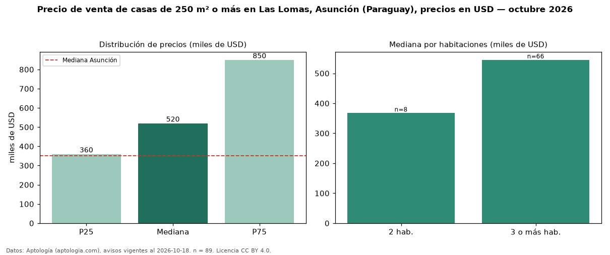

Precio de venta de casas de 250 m² o más en Las Lomas, Asunción (Paraguay), precios en USD — octubre 2026
USD 520.000 es el precio mediano de casas de 250 m² o más en venta en Las Lomas, Asunción (Paraguay) (n = 89 avisos). Frente a la mediana de todas las casas en venta de Las Lomas (USD 380.000, n = 156), queda 37 % por encima; este segmento reúne el 57 % de esos avisos. Por metro cuadrado, la mediana es USD 1.250/m² (n = 88), 12 % por debajo del conjunto de referencia (USD 1.425/m²). El área mediana anunciada es 393 m². El segmento con más oferta es el de 3 o más habitaciones (66 avisos, mediana USD 545.000); pasar de 2 habitaciones a 3 o más habitaciones cambia la mediana +48 %. La mitad central de los avisos va de USD 360.000 a USD 850.000 (razón 2,4), una dispersión alta. La mediana de todas las casas en venta de Asunción es USD 350.000 (+49 % de diferencia). Datos: Aptología (aptologia.com), CC BY 4.0 — https://www.aptologia.com/py/venta/asuncion/las-lomas. Archivos: PDF, CSV con las cifras y gráfica PNG.

| Avisos únicos | 89 |
|---|---|
| Percentil 25 | COP 360.000 |
| Mediana | COP 520.000 |
| Percentil 75 | COP 850.000 |
| Mediana por m² | COP 1.250 |
Fuente: avisos vigentes de portales inmobiliarios recopilados por Aptología, deduplicados (mínimo 30 avisos únicos por celda). Precios pedidos, no cerrados. Fecha: 2026-10-18.